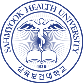
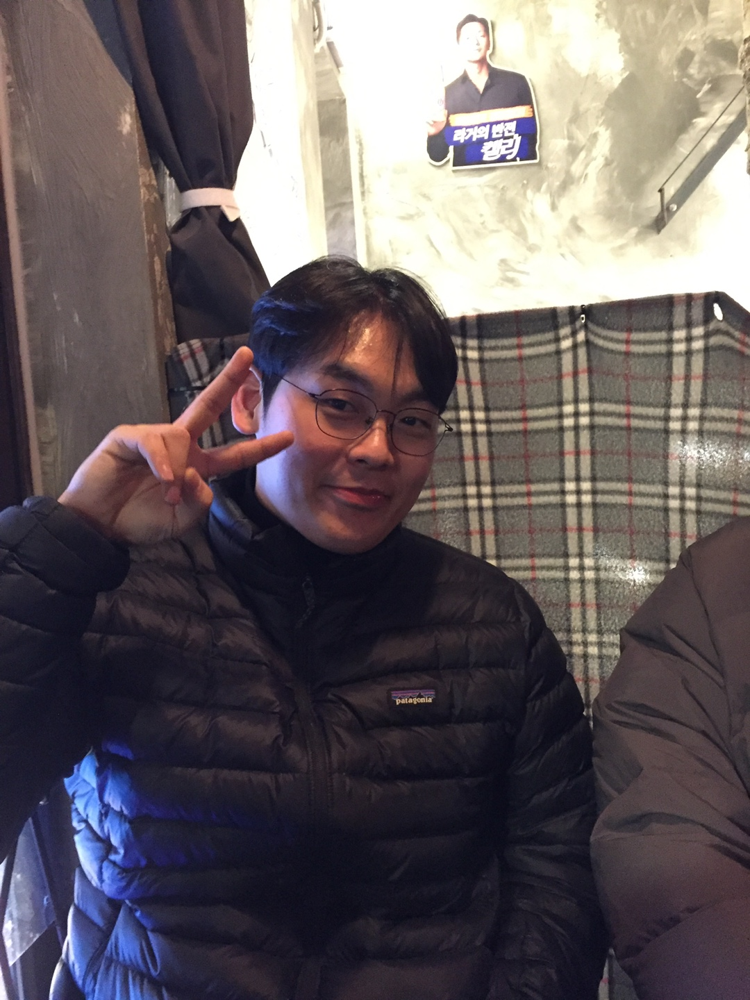
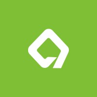
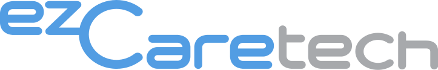
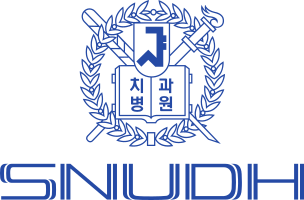
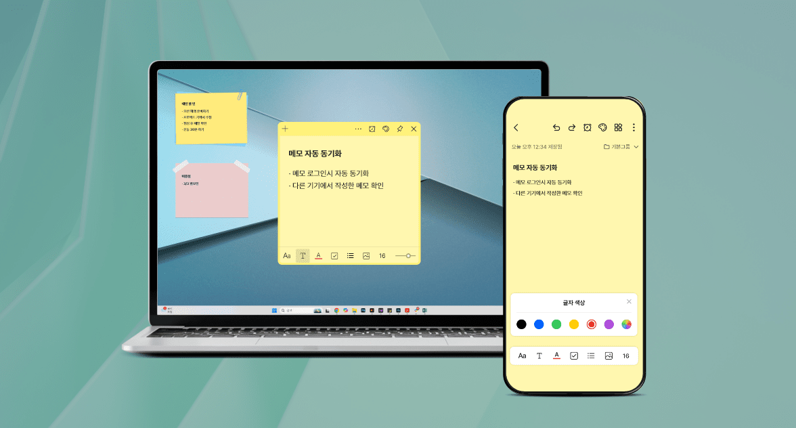
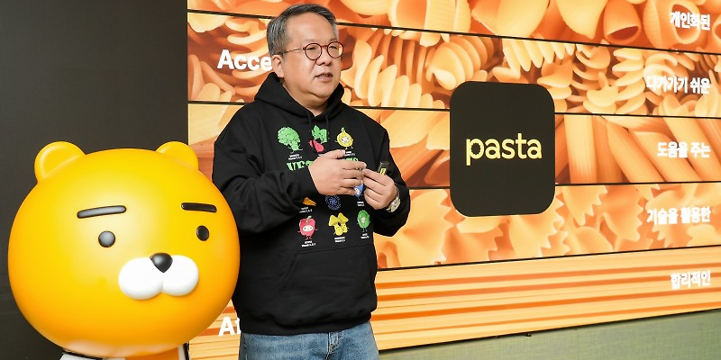
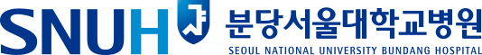

Sahmyook Health University
Medical Information Engineering
Feb. 2017 — Feb. 2022

.NET developer / Software Engineer
저는 Windows 데스크톱 애플리케이션과 의료정보시스템을 개발하는 .NET 개발자입니다.
이지케어텍에서 분당서울대학교병원 HIS의 진료기록 업무를 담당하며 Oracle 기반 데이터 처리와 외부 의료·헬스케어 API 연동을 구현했습니다. 현재는 인라이플에서 ezMemo의 Local-First 동기화 구조, 데이터 마이그레이션, 설치·자동 업데이트 환경을 개발하고 있습니다.
최근에는 AI를 레거시 코드 분석, 작업 계획 수립, 회귀 시나리오 정리와 검증 과정에 반영하고 있습니다. 특히 컨텍스트, 도구 사용, 검증 절차를 함께 설계하는 하네스 엔지니어링에 관심이 있습니다.

Medical Information Engineering
Feb. 2017 — Feb. 2022

모비소프트 개발팀 · .NET developer
2025.09 — 현재

분당서울대학교병원 · .NET developer
2022.08 — 2025.05

의료정보팀 · .NET developer
2020.12 — 2021.06

Local-First 동기화 구조를 갖춘 Windows 메모 애플리케이션 고도화
로컬 우선 저장, 비동기 서버 동기화, 안전한 데이터 마이그레이션, 설치·자동 업데이트 흐름을 중심으로 데스크톱 애플리케이션을 고도화했습니다.
제품 페이지 ↗
카카오헬스케어 혈당 데이터를 병원 HIS에 연결
외부 헬스케어 API 인증과 JSON 데이터 처리, Oracle 저장, 진료기록 화면 연동까지 의료진이 사용할 수 있는 전체 흐름을 구현했습니다.
제품 페이지 ↗
진료정보교류 거점 서버 변경에 따른 HIS 연동 구조 전환
기존 서버 의존 통신을 API 기반 구조로 전환하며 데이터 매핑, 예외 처리, UI 변경과 실제 운영 환경의 연동 테스트를 수행했습니다.